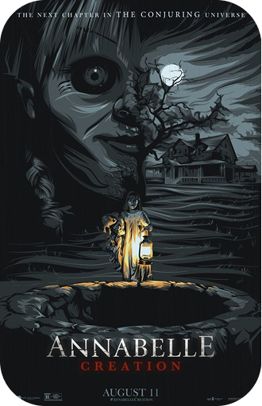
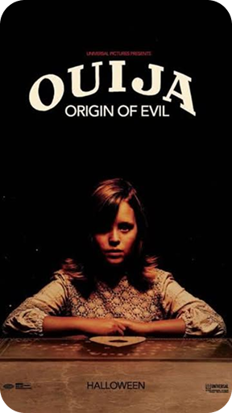
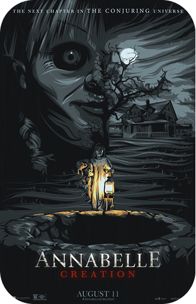
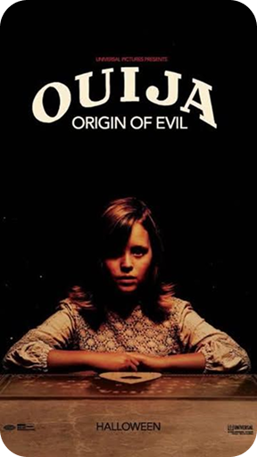

Os investigadores paranormais Ed e Lorraine Warren trabalham para ajudar a família aterrorizada por uma entidade
demoníaca em sua fazenda. / / duraçao:1h e 52m lançado em:2013
Anos após a trágica morte de sua filha, um habilidoso artesão de bonecas e sua esposa decidem, por caridade,
acolher em sua casa uma freira e dezenas de meninas desalojadas de um orfanato. Atormentado pelas lembranças
traumáticas, o casal ainda precisa lidar com um amendrontador demônio do passado: Annabelle, criação do artesão. /
/ duraçao:1h e 49m lançado em:2017
Doris é uma menina solitária e sua mãe finge se comunicar com espíritos. Certo dia, a garota usa um tabuleiro de
Ouija para contato com o falecido pai e uma série de seres malignos se apoderam de seu corpo. / / duraçao:1h e 29m
lançado em:2014
o filme e muito bom, uma das minhas franquias de filmes favorita, eu amo esse tipo de filme de terror religioso
mas acho que mesmo sem gostar todo mundo deveria ver esse filme, a trilha sonora e o suspense antes do susto sao
os seus pontos altos -29/04/2025
eu gostei muito da parte em que eles contam mais sobre a historia da Anabelle e assim me fez ter pelo menos um
pouco de empatia mesmo com o vilao da historia, eu gosto quando mostram todos os pontos de vista da historia.
-29/04/2025
é um filme bom no começo e no desenvolvimento, eu gosto quando o suspense religioso gira em torno de uma criansa,
porem o final do filme deixou muito a desejar, nao suprindo as expectativas do público. -29/04/2025
 


